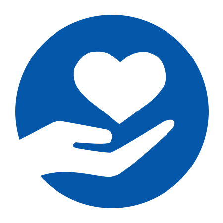
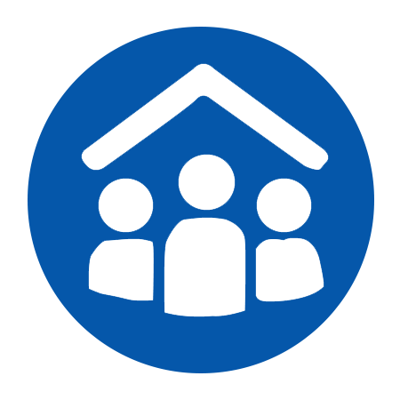
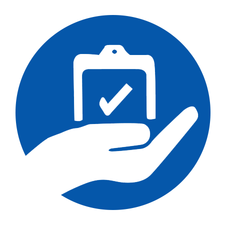

À propos d'AFADI
Association des Femmes Actives pour Développement Intégral
Qui sommes-nous
AFADI (Association des Femmes Actives pour le Développement Intégral) est une organisation non gouvernementale congolaise, basée à Goma, dans la province du Nord-Kivu, à l’Est de la République Démocratique du Congo.
Créée en ..... par des femmes et des acteurs communautaires engagés, AFADI est née de la volonté de répondre de manière concrète et durable aux souffrances que vivent les populations les plus vulnérables, en particulier dans les zones affectées par les conflits armés, les déplacements forcés et la pauvreté structurelle.
AFADI agit au plus près des communautés, avec une approche humanitaire, éducative et inclusive, centrée sur la dignité humaine et le développement intégral.
“AFADI : Changeons des vies avec la connaissance
Vision
Nous aspirons à une société congolaise éduquée, équitable et résiliente, où chaque femme, chaque enfant et chaque communauté a accès aux connaissances, aux opportunités et aux droits fondamentaux nécessaires pour construire un avenir meilleur.
Mission
La mission d’AFADI est de changer durablement les conditions de vie des populations vulnérables à travers :.
- L’accès à l’éducation pour tous,
- L'autonomisation économique des femmes
- L'assitance humanitaire d'urgence
- Et plaidoyer pour le respect des droits fondamentaux
Notre action repose sur la conviction que la connaissance est un levier puissant de transformation sociale.
Nos Valeurs fondamentales

Dignité humaine
Chaque personne mérite respect et considération
Équité et inclusion
Personne ne doit être laissé pour compte, en particulier les filles et les femmes

Participation communautaire
Les communautés sont actrices deleur propre développement

Transparence et redevabilité
Nous rendons compte à nos bénéficiaires et partenaires

Solidarité et engagement
Nous agissions avec et pour les plus vulnérables
Secteurs d'interventions
Éducation et Appui à
la scolarisation
AFADI œuvre pour garantir l’accès à une éducation de qualité aux enfants vulnérables, notamment ceux issus des familles déplacées, défavorisées ou affectées par les conflits.
Nos actions incluent :
- La distribution de kits scolaires
- La sensibilisation des parents et communautés sur l’importance de l’éducation,
- Le soutien aux écoles et aux enseignants,
- La promotion de l’égalité filles-garçons à l’école.
Promotion et automatisation
des femmes
AFADI place la femme au cœur du développement communautaire.
Nous accompagnons les femmes à travers :
- Des formations pratiques et professionnelles,
- La mise en place d’activités génératrices de revenus (AGR),
- Le renforcement du leadership féminin,
- La promotion des droits des femmes et de leur participation active à la vie sociale et économique.
Une femme autonome est un pilier pour sa famille et sa communauté.
Réponses humanitaires
d'urgences
Face aux crises humanitaires récurrentes en RDC, AFADI intervient pour répondre aux besoins urgents des populations affectées.
Nos réponses comprennent :
- La distribution de fournitures non alimentaires (NFI),
- Les kits d’hygiène et de première nécessité,
- L’appui aux familles déplacées internes,,
- L’assistance aux enfants et femmes en situation de grande vulnérabilité.
Nos interventions visent à restaurer la dignité et à soulager les souffrances immédiates.
Plaidoyer pour les droits
fondamentaux
AFADI mène des actions de plaidoyer pour promouvoir :
- Le droit à l’éducation pour tous les enfants, sans discrimination,
- L’égalité d’accès à l’école pour les filles et les garçons,
- la protection des enfants et des femmes contre toutes formes de violence.
Notre plaidoyer vise à faire entendre la voix des communautés et à influencer positivement les politiques et pratiques locales.
Pourquoi AFADI ?
Parce que nous croyons que :
L’éducation protège
Elle offre sécurité, dignité et avenir aux enfants.
La connaissance transforme
Elle libère les individus et renforce les communautés.
L’autonomisation crée des sociétés durables
Elle donne aux femmes et aux familles les moyens d’agir.
Chaque action menée par AFADI vise à changer une vie aujourd’hui pour bâtir une génération plus forte demain.